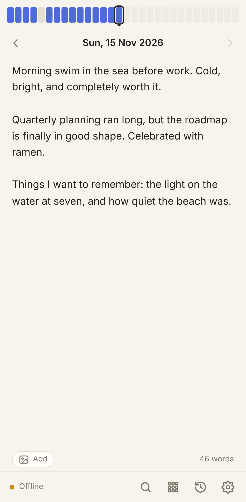
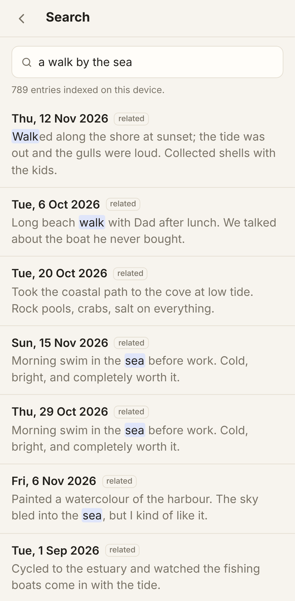
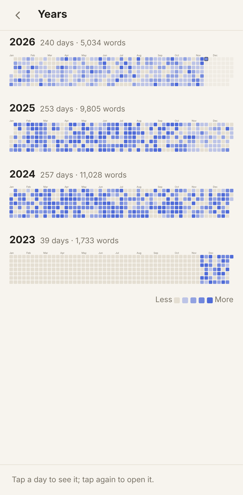

A daily journal that opens on today and lives in your own GitHub repo.
Permajournal for Android is fast and works offline. Every day is one plain Markdown file, backed up to a repository you own. There is no server and no account other than GitHub.

What it does
-
Opens on today
Every start lands on the current day, ready to type. A bar across the top shows which days of the month you wrote.
-
Offline first
Each keystroke is saved on the phone within a fraction of a second, with or without a connection.
-
Backed up to GitHub
Entries sync to
entries/YYYY-MM-DD.mdin your repository a few seconds after you stop typing. -
Never loses text
Edits made on two devices are merged line by line, then word by word. When they truly overlap, both are kept.
-
Search by meaning
Find “a walk by the sea” even if you wrote “the shore”. The search model runs on the phone; nothing is sent anywhere.
-
Years at a glance
One grid per year since your first entry, shaded by how much you wrote. Tap a day to open it.
-
Photos
Attach photos to a day. They are stored in the same repository with Git LFS and cached on the phone.
-
Plain files, yours to keep
No proprietary format and no lock-in: the journal is Markdown in a Git repository, readable anywhere.
A closer look


Install
- Download the latest APK from the releases page on your Android phone.
- Open the file and allow your browser to install apps if Android asks.
- Sign in with GitHub and pick the repository to keep your journal in.
Each release is signed with the same key, so a new version installs over the previous one and keeps your data.